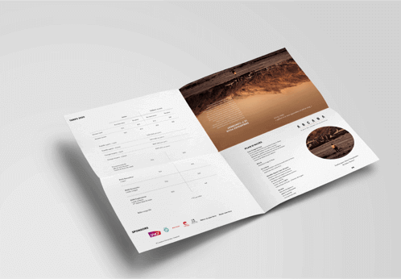
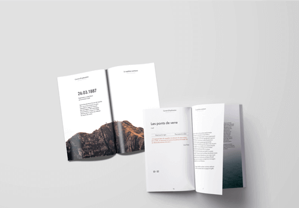
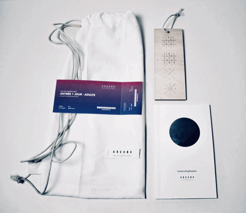
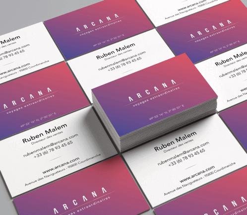
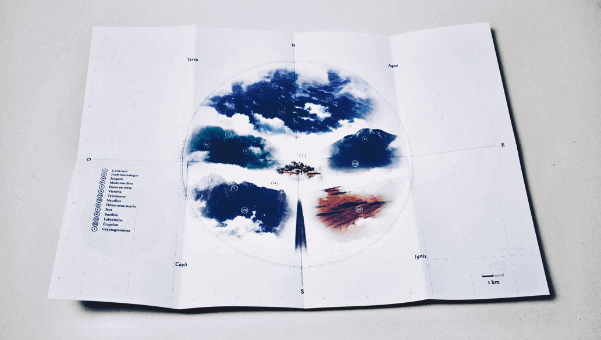
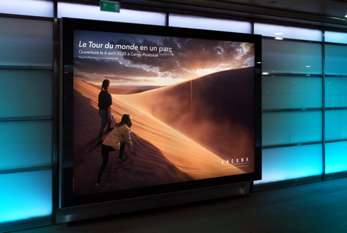
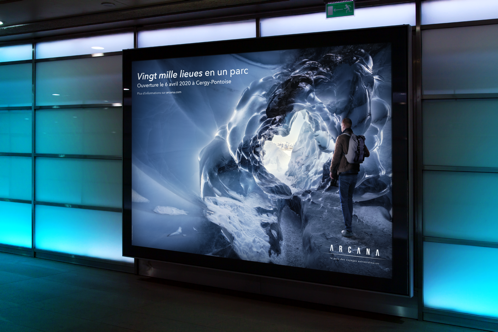
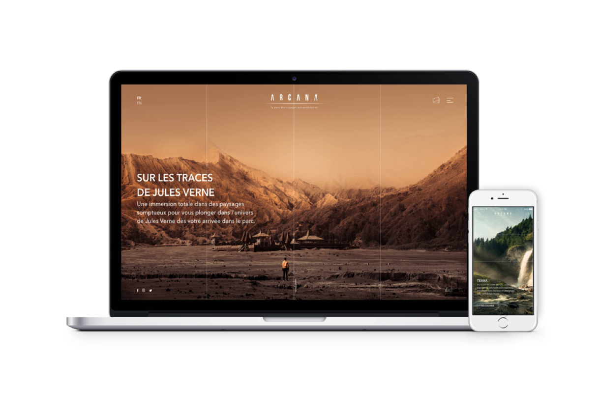

Branding
Product Design
App Design
UI/UX
3D
In 1987, the first french amusement park was built in the parisian suburbs. It’s theme: French literature. Fables and novels became the stage set within this highly cultural and playfull environment : Mirapolis. The park will quickly closed in 1991.
The project is a 360 campaing which includes the whole rebranding, the website, and a trailer. The new park’s theme is Jules Verne.
CR: Bessy Bra, Camille Génin
Branding: Quentin Bizet, Alice Helfer
Website: Alice Helfer
Video: Quentin Bizet, Ruben Malem
3D: Tom Bar
Photography: Guilhem Camensuli, Felix Röser







